必要なものはすべて画面の上に
今のアプリのメニュー、サウンドと明るさ、カレンダー、通知、検索が、画面上の 1 本のバーから始まります。クリックしても、入力中のアプリからフォーカスを奪いません。
メニューバー
今のアプリのメニューが上に
メニューがあるアプリは、そのメニューをそのまま表示。ブラウザー、エクスプローラー、Notion のようにメニューがないアプリは、よく使うショートカットをメニューにして表示します。クリックするとショートカットがそのままアプリに届くので、リモート デスクトップのようにキーが届きにくいときにも便利です。


サウンドも明るさもワンクリック
コントロールセンターで、画面の明るさ、夜間モード、電源モードをすぐに変えられます。サウンド メニューでは出力・入力デバイスと音量を、Bluetooth メニューではイヤホンの接続をクリックで行えます。

時計をクリックするとカレンダー
カレンダーには韓国の祝日と旧暦が表示されます（ほかの国の祝日にはまだ対応していません）。Google カレンダーや Outlook.com の iCal アドレスを貼り付ければ、予定も一緒に表示されます。

通知
右上のバナーで、静かに
Windows の通知を画面右上のバナーで表示し、長い通知はクリックで展開できます。見逃した通知は、時計をクリックするとアプリごとにまとめて表示されます。
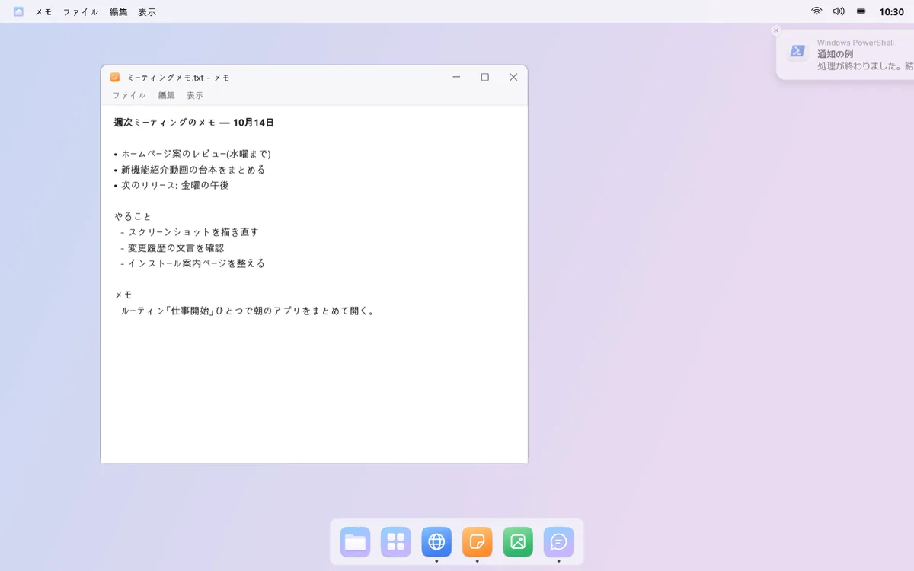
2 回弾んで、あとは点だけ
通知が届くと、そのアプリのドック アイコンが 2 回弾んで赤い点が残ります。弾み続けることはなく、アプリごとにオン/オフできます。
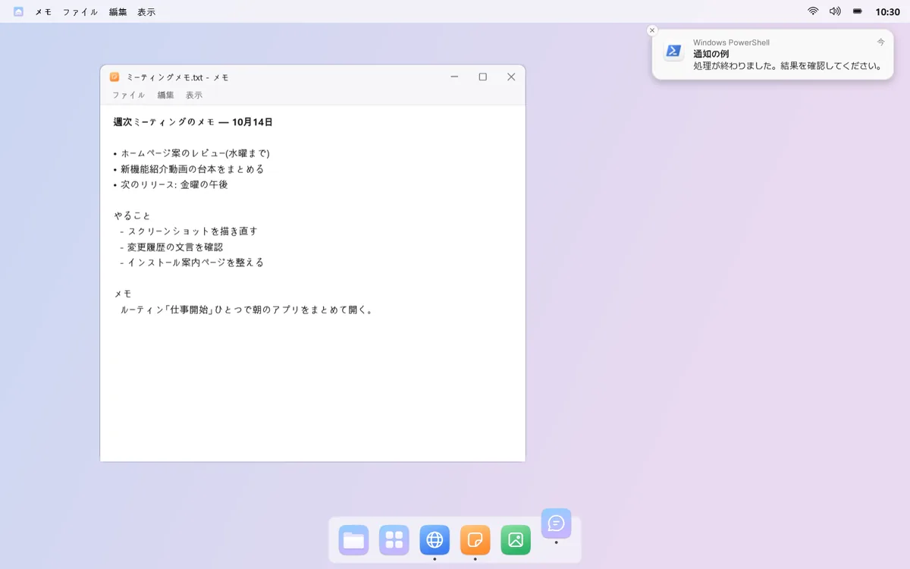
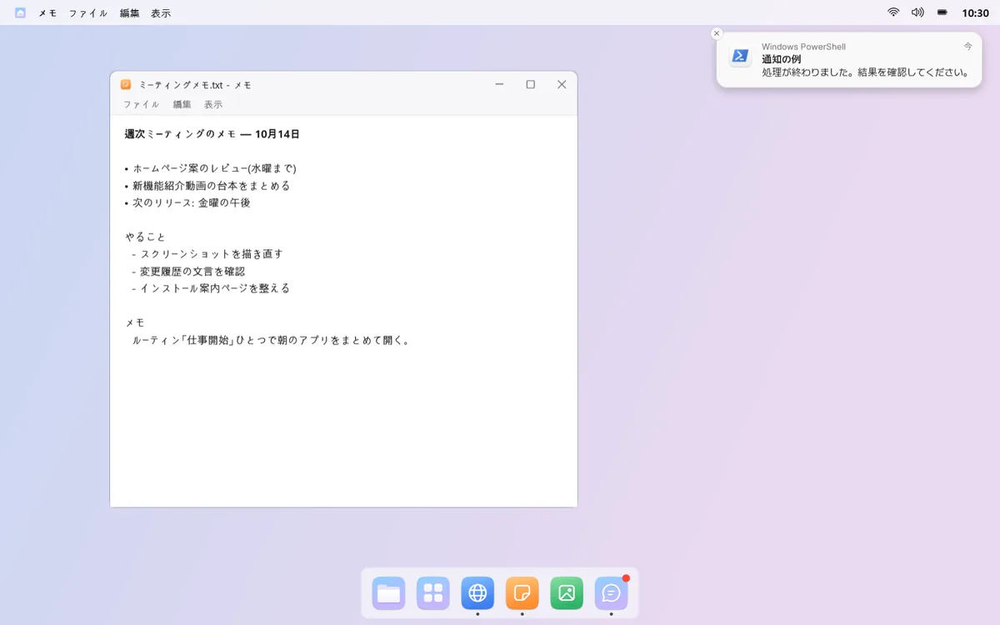
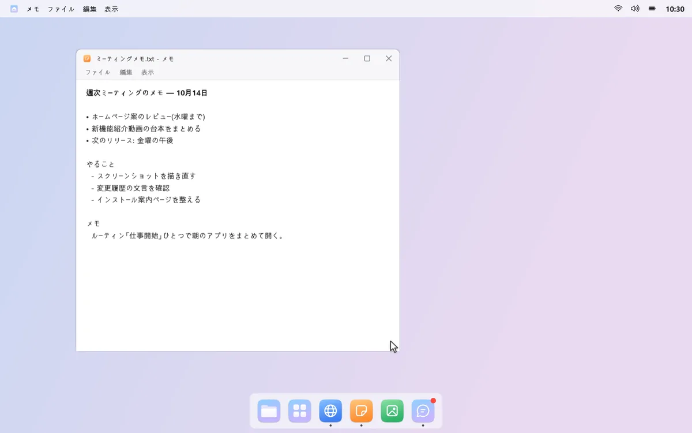
mongdock 検索
数文字打つだけで見つかる
ショートカット キーを押すと、画面中央に検索ボックスが開きます。アプリ、Windows の設定、ファイルやフォルダーを、数文字打つだけで探せます。たとえば「でん」で電卓が見つかります。
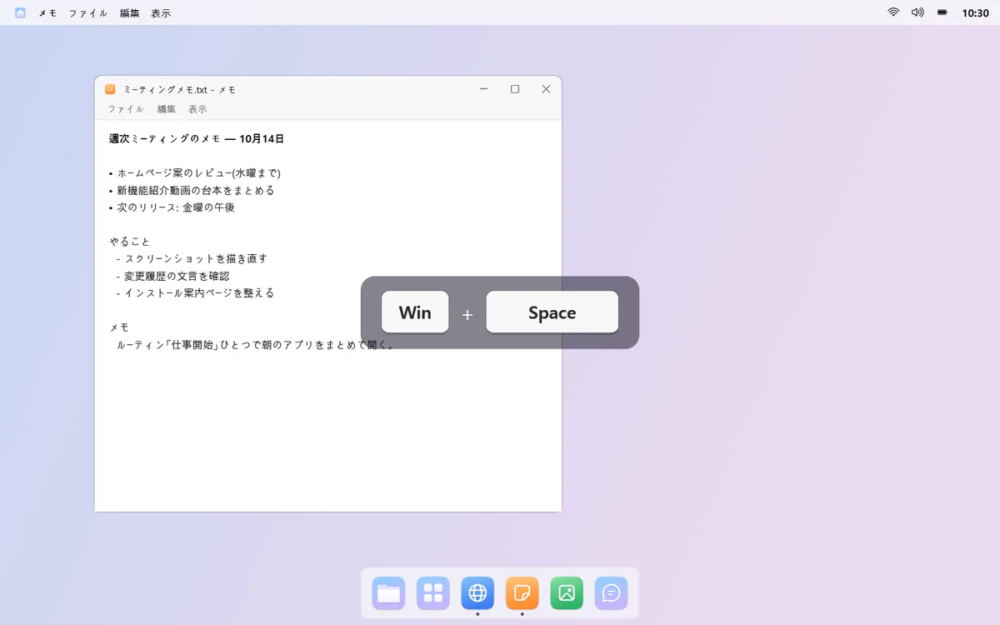
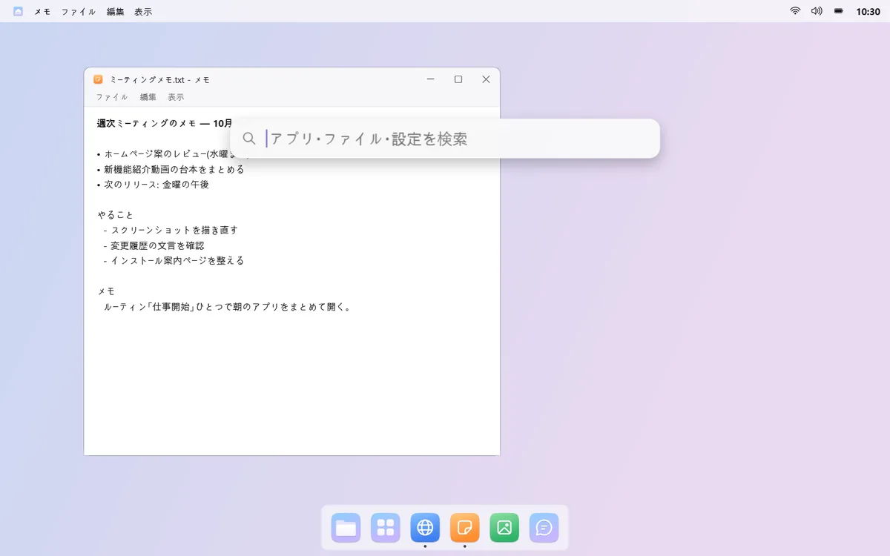
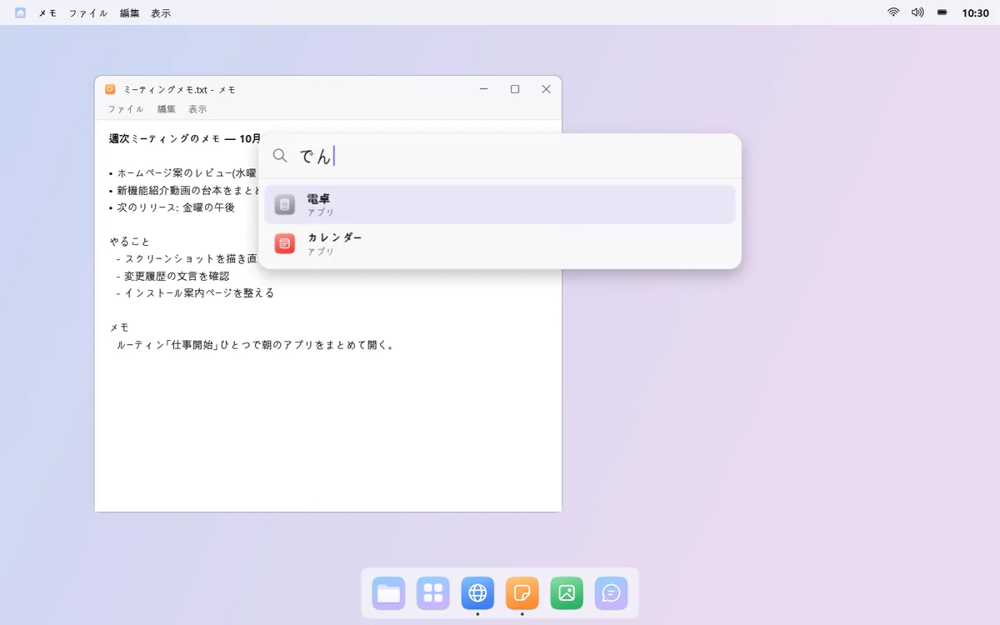
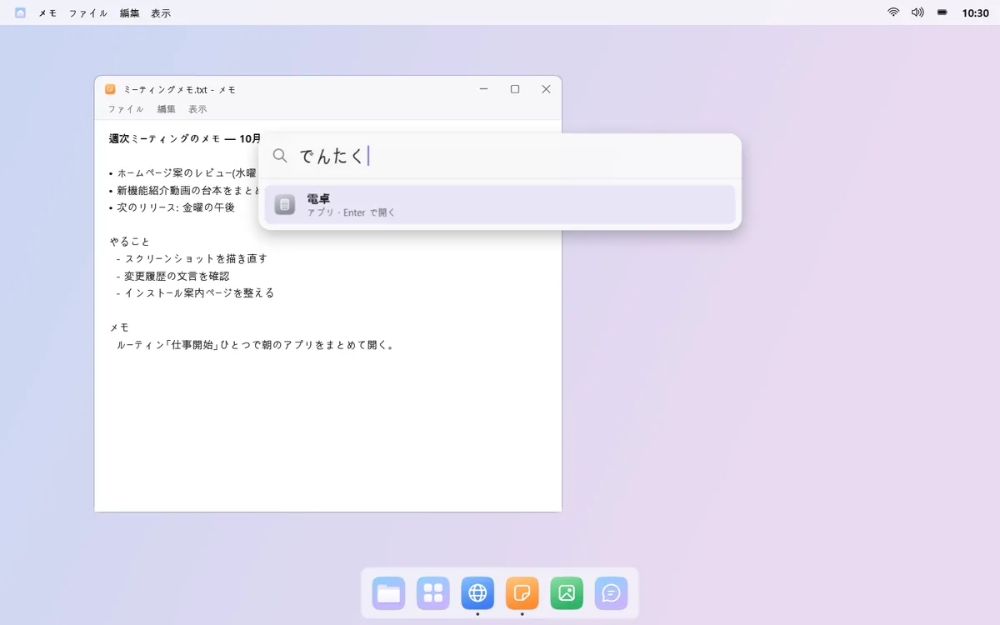
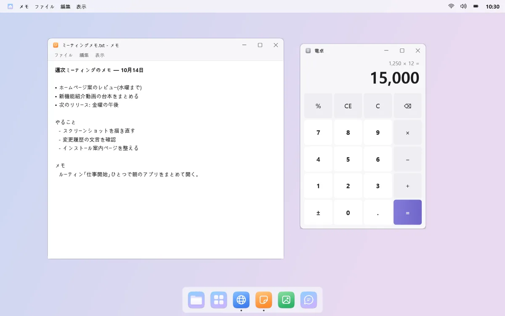
計算もウェブ検索も
「200*15%」のように入力すると一番上に答えが表示され、Enter でコピーできます。見つからないときは、同じ言葉で Windows 検索やウェブ検索ができます。

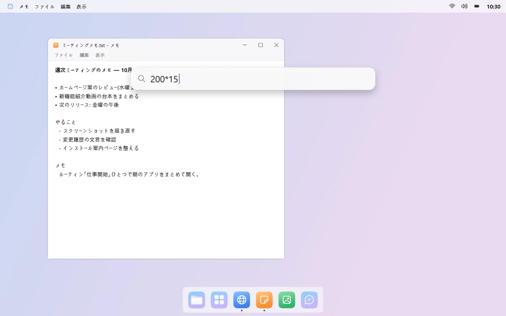
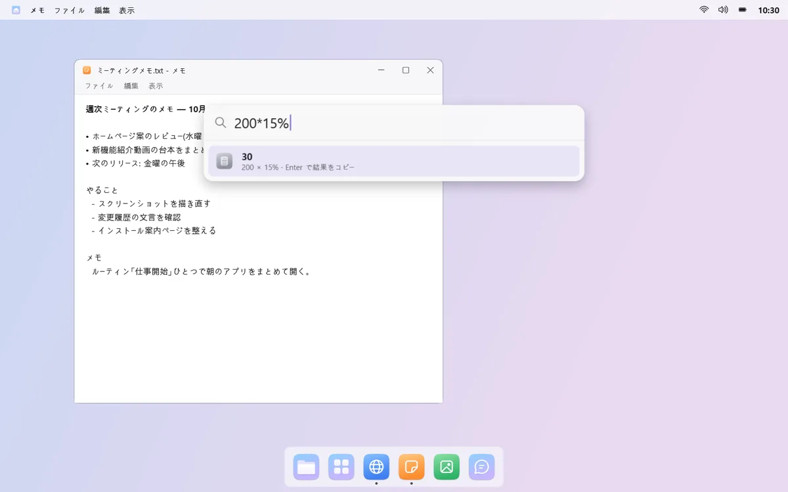
知っておきたいこと
- 通知音を変えたときは、最初の 1 回だけ、サインインし直すと反映されます。
- 外部モニターの明るさは、明るさ調整（DDC/CI）に対応したモニターでのみ変えられます。